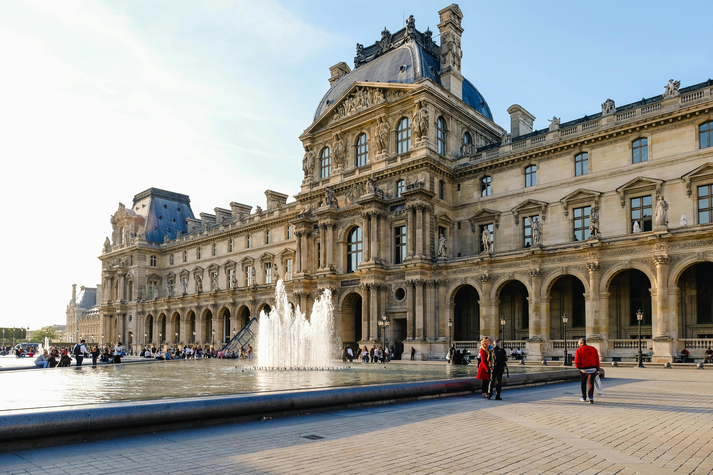

"La France, riche de sa diversité, est composée de 18 régions aux cultures uniques,
à la gastronomie savoureuse, et aux paysages époustouflants. Plongez au
cœur de chaque région pour découvrir ses trésors."

La France, héritière d'une riche histoire millénaire, a été façonnée par de nombreuses civilisations. À l'origine habitée par les peuples celtes, la Gaule a été conquise par l'Empire romain, donnant naissance à une culture mêlant traditions locales et influences méditerranéennes. Au Moyen Âge, la France s'est affirmée comme une puissance européenne sous l'influence des rois capétiens, avant d'être profondément transformée par la Révolution française de 1789. Ce tournant historique a marqué l'avènement de la République et des idéaux de liberté, d'égalité et de fraternité.
Aujourd'hui, la France est connue pour son patrimoine exceptionnel, ses monuments emblématiques comme la Tour Eiffel ou le Mont-Saint-Michel, ainsi que son rôle central dans l'histoire européenne. Avec ses 18 régions, elle témoigne d'une diversité culturelle unique et d'une histoire qui continue de fasciner.
2 956 Mrd€
68 millions
672 051 km²
Paris
89 millions par an
118 habitants/km²
4 809m
101
Elle compte plus de 2 700 km de côtes, offrant certains des paysages marins les plus époustouflants d'Europe.
Réputée pour son rhum agricole fabriqué à partir de jus de canne à sucre frais, et offrant des saveurs uniques et raffinées.
Fameuse pour ses vins prestigieux, elle possède aussi une forte tradition de fromages comme l'Époisses.
Avec 300 jours de soleil par an, c'est l'une des régions les plus ensoleillées de France.
La culture française, reflet d’un patrimoine exceptionnel, est l’un des joyaux les plus précieux de l’Hexagone. Terre d’art et de création, la France est à l’origine de mouvements artistiques majeurs comme le romantisme, l’impressionnisme ou le surréalisme, qui continuent d’influencer le monde entier. La gastronomie française, reconnue au patrimoine mondial de l’UNESCO, fait la fierté de ses régions : des vins prestigieux de Bordeaux aux fromages emblématiques comme le camembert ou le roquefort, chaque spécialité raconte une histoire.
La littérature et le cinéma occupent une place centrale dans la culture française, avec des figures emblématiques telles que Victor Hugo, Simone de Beauvoir ou Agnès Varda, qui ont marqué l’imaginaire collectif. Riches de festivals, de traditions folkloriques et de savoir-faire artisanaux, les régions de France cultivent un art de vivre unique où modernité et héritage se rencontrent pour célébrer la beauté du quotidien.